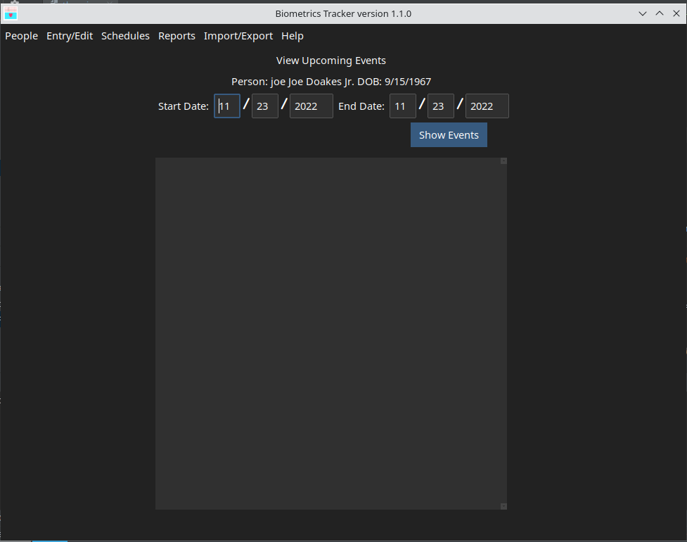

This function allows you to view the upcoming events that will be initiated by a person's Schedules. if you are tracking more than one person, you will be prompted to select the person whose schedules you want to work with. Following that, the window shown below will be displayed. Enter the starting and ending dates for the period you are interested in, then click the button.
If the selected person's schedule will initiate any events within the specified period, the events will be listed as shown below.